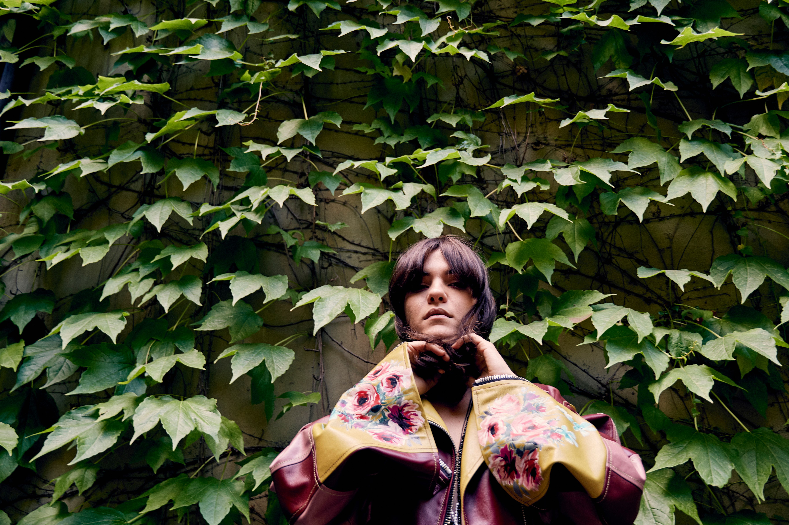
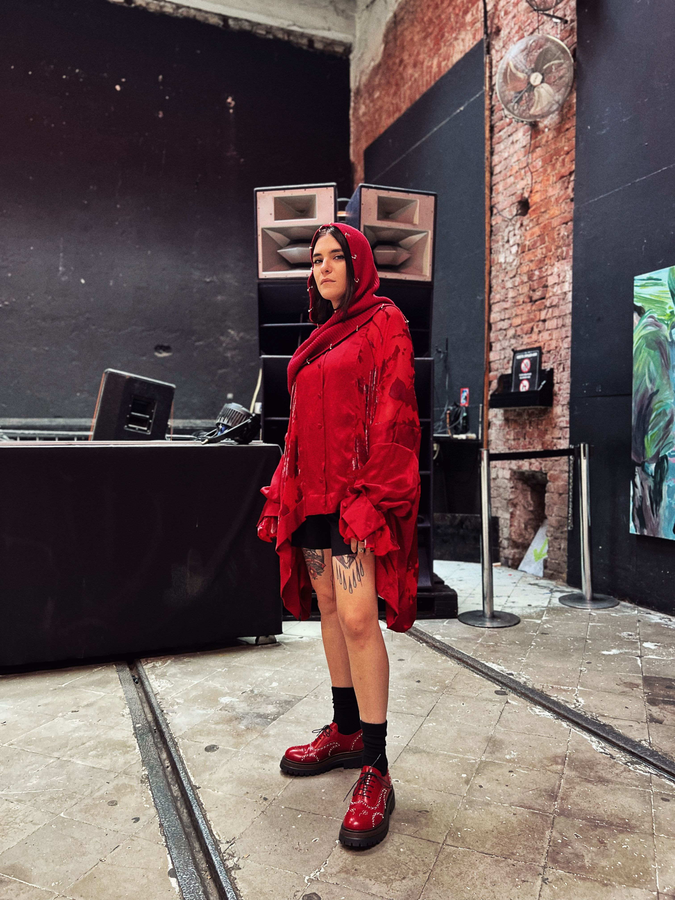

1. Se dovessi raccontare il tuo viaggio dalla Sardegna al Berghain in una sola frase, quale sarebbe?
Non è stato un viaggio verso un luogo, ma un lento allontanamento da tutto ciò che non mi permetteva di essere me stessa, nel costante tentativo di avvicinarmi a ciò che sono.
"Non è stato un viaggio verso un luogo, ma un lento allontanamento da tutto ciò che non mi permetteva di essere me stessa, nel costante tentativo di avvicinarmi a ciò che sono."
2. C'è stato un momento preciso in cui hai capito che la musica sarebbe diventata la tua vita e non solo una passione?
In realtà non c'è mai stato un momento preciso, perché è qualcosa che ho saputo e voluto fin da quando ho memoria. Ho sempre sentito che la musica avrebbe avuto un ruolo centrale nella mia vita; tutto il resto è stato il modo per darle una forma.
3. In un'epoca in cui molti inseguono la visibilità, tu sembri aver costruito la tua carriera soprattutto sulla costanza. Quanto conta il carattere rispetto all'estetica?
L'estetica ha valore quando diventa un linguaggio capace di esprimere una personalità, ma credo che sia il carattere a dare profondità e continuità a ciò che si costruisce nel tempo. È naturale pensare anche al modo in cui ci si presenta, perché fa parte del racconto di un artista, ma per me la cosa più importante è rimanere il più possibile fedele a ciò che sento. Credo che la costanza nasca proprio da questa coerenza.
4. Hai suonato in alcuni dei contesti più importanti d'Europa. Cosa rende davvero speciale un dancefloor, al di là del nome del club?
I club possono avere una storia e un'identità, ma ogni dancefloor nasce da un incontro. Il nome di un luogo può evocare un immaginario, ma non può creare quella connessione invisibile che a volte si genera tra chi suona e chi ascolta; quando succede, il confine tra la consolle e la pista si dissolve e tutti diventano parte dello stesso racconto. È un qualcosa di impossibile da replicare a comando, ed è proprio questo a renderlo così prezioso!
Ho vissuto momenti profondissimi in club iconici e in contesti molto più piccoli. Quando quella connessione si crea, il prestigio del luogo smette di avere importanza e resta solo l'esperienza condivisa.

5. Il Tempio è diventato una tappa importante del tuo percorso. Che cosa hai trovato qui che altrove è più difficile incontrare?
Credo di aver trovato a Tempio una cosa che spesso è difficile preservare: l'anima. Un luogo dove la musica non è il semplice elemento di una serata, ma uno dei linguaggi attraverso cui si crea connessione. Ho trovato una comunità, un ascolto sincero e la possibilità di vivere momenti che non nascono da una formula, ma dall'incontro tra persone, culture e forme di espressione diverse: dalla musica alla danza, dai laboratori alle iniziative di condivisione e solidarietà. È proprio questa dimensione umana e multiculturale che rende il Tempio così speciale.
"Credo di aver trovato a Tempio una cosa che spesso è difficile preservare: l'anima."
6. La scena techno è cambiata moltissimo negli ultimi dieci anni. Quali trasformazioni ti entusiasmano e quali invece ti preoccupano?
La tecnologia mi entusiasma perché ha allargato enormemente i confini della creatività: oggi un artista ha possibilità espressive incredibili. Allo stesso tempo mi spaventa il rischio di un'eccessiva dipendenza dallo strumento, come se a volte la possibilità tecnica potesse prendere il posto della necessità artistica. Gli strumenti possono amplificare un'idea, ma non devono crearne una al posto nostro. Per me la musica continua a nascere prima di tutto da un'intenzione, da un'urgenza, da qualcosa che ha un'anima.
In un mondo dove tutto corre molto velocemente è sempre più importante proteggere la ricerca, l'ascolto e il tempo necessario affinché un'identità artistica possa maturare.
Credo che la sfida oggi sia riuscire a crescere senza perdere autenticità, perché l'immagine rischia di avere più spazio della ricerca musicale e la necessità di essere costantemente presenti toglie tempo alla profondità e al percorso personale.

7. Guardando la ragazza che iniziava a suonare in Sardegna, quale consiglio le daresti oggi dopo tutto il percorso che hai fatto?
Le direi di continuare esattamente su quella strada, perché quella ragazza aveva già dentro la risposta. Le direi di non perdere mai la purezza della ricerca, la curiosità e quella necessità profonda di esprimersi attraverso la musica. Il successo o i traguardi sono solo conseguenze, la cosa più importante è rimanere fedeli a ciò che ci muove davvero.